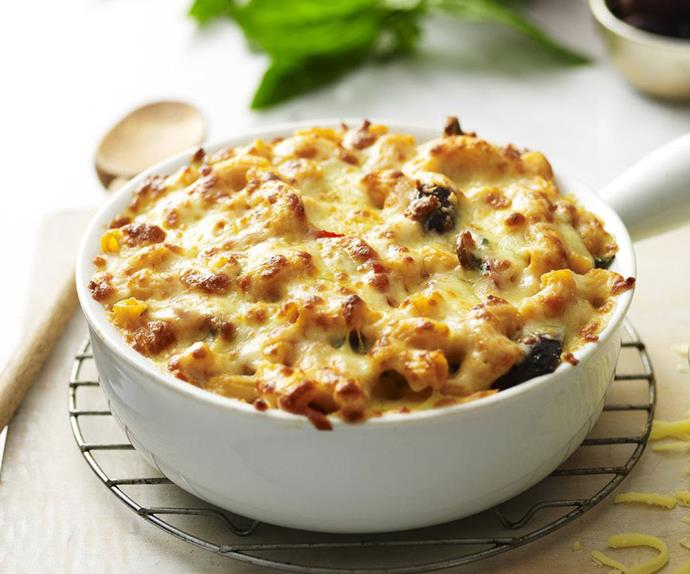

Back
Baked Celeriac Macaroni with a Crispy Olive Top

Description
This is a take on a classic mac and cheese, but the sauce comes from some sweet roasted celeriac and plump butter beans. It's lighter and way les cloying than a straight-up mac and cheese, but still creamy, satisfying and full of flavour. I top it off with some cavalo nero (or kale), a few walnuts and black olives, which crisps to form a colourful textured crown that elevates this to another level. I add a little Permesan to the sauce, but nutritional yeast works really well here if you'd prefer to keep it completely free of cheese.
Ingredients
Serves 6
- 1 celeriac (about 600g)
- 3 cloves garlic, peeled
- 1 tablespoon olive oil
- 1 x 400g tin of butter beans, drained
- 50g nutritional yeast
- 1 teaspoon wholegrain mustard
- a good pinch of cayenne pepper
- 2 tablespoons olive oil
- 1 teaspoon cider vinegar
- 400ml milk, or as needed
- 350g wholewheat macaroni or rigatoni
For the Topping
- 250g cavalo nero or kale, leaves stripped and roughly torn
- 75g walnuts, roughly chopped
- 100g pitted black olives such as kalamata
- 25g grated Parmesan
Instructions
- Preheat the oven to 220º/200º fan/gas 7
- Thickly peel and cube the celeriac and place it on a baking tray along with the garlic, a little olive oil and a pinch of salt. Toss everything together, then roast for 20 minutes, until blistered and tender. Turn the oven down to 200ºC/180ºC fan/gas 6.
- Transfer roasted celeriac and garlic to a food processor with all the remaining ingredients except for the milk and pasta and blitz until you have a completely smooth,thick sauce. With the motor running, andd the milk until you have a smooth and creamy sauce - the consistency of thick béchamel - adding a little more if you need to.
- Put a large pot of water on to boi. with plenty of salt. Once boiling, cook the pasta for 4 minutes less than the packet instructions. Drain and return ot the pot, drizzle with a little olive oil and toss to coat.
- Next pour the celeriac sauce over the pasta bit by bit and keep stirring so that it folds into all the tubes. You should be able to use up all the sauce, but if you have any left over it will keep in the ƒridge for up to 3 days.
- Transfer the pasta to an ovenproof pan or baking dish. Tumble the topping ingredients into a bowl and toss so that everything is mixed evenly, then scatter over the top of the creamy pasta. Bake for about 20-25 minutes until the pasta ans sauce are warmed through, the kale is crispy and the olives blistering.